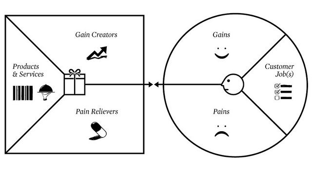
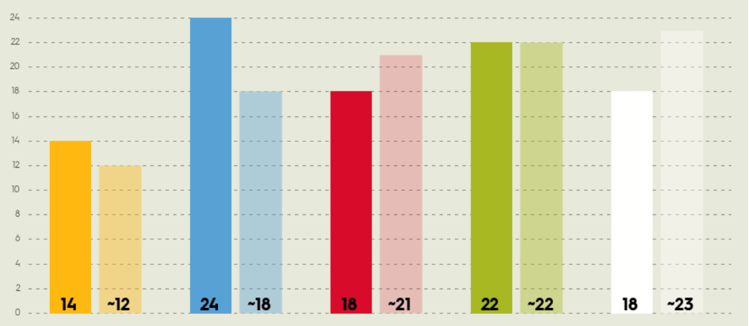
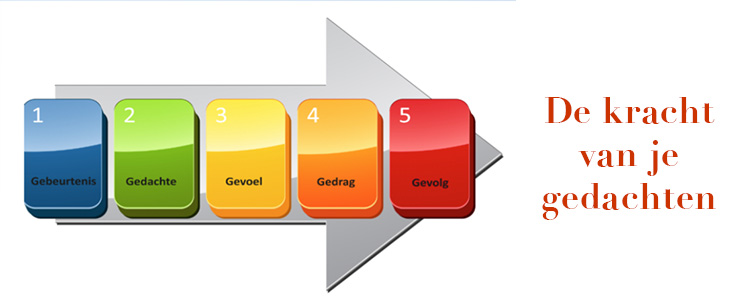
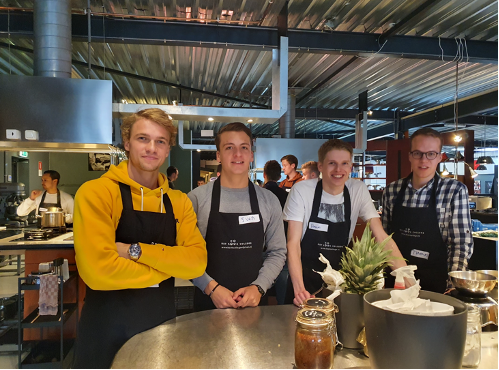

001 : Business
Bij de leerlijn Business, verzorgd door Mariëlle Seegers, zijn we bezig geweest met veel verschillende activiteiten, zoals: gastcolleges, lunchlezingen, excursies, workshops, testen en reflecties of beschrijvingen van de ervaringen.Dit allemaal met doel om te zien hoe technologische ontwikkelingen of veranderingen van invloed zijn op de 'business' van een bedrijf, of andersom. De ervaringen van deze leerlijn zijn in de vorm van een 'blog' weergegeven, daardoor wordt het wel langer maar is alles per week ingedeeld en dus alsnog goed terug te vinden.
Leerdoelen
- Ontwerpt bedrijfsprocessen volgens Smart Industry Criteria (SB21) - Beschrijft de implicaties voor het gehele business model en voor de positie van de organisatie in de keten (SB22)
Week 1 - Value Map
In de eerste week ben ik bezig geweest met het maken van een Value Map en mijn 'Hello-World' presentatie.
Value map
Gain creators: Welke persoonlijke activa kun je inzetten? Op dit moment kan ik als bedrijfskunde student mijn bedrijfskundige kennis die ik de afgelopen jaren heb opgedaan inzetten. Dit zijn vaardigheden waar IT’ers waarschijnlijk niet over beschikken of minder goed in zijn. Zo kunnen wij als bedrijfskundigen vaak goed het overzicht houden, verbanden leggen tussen verschillende disciplines, samenwerken, stakeholders op elkaar afstemmen en het project leiden als projectmanagers.
Products & Services: Hoe ziet jouw ideale minor-traject eruit? Mijn ideale minor-traject ziet er uit als een traject waarin ik als bedrijfskundige meer te weten kom over hoe ik nieuwe innovaties kan toepassen op bedrijven en een bedrijf zich op deze manier kan onderscheiden van concurrenten. Voor mij zit er wat minder belang bij het leren coderen of programmeren vermoed ik zelf, hier weet ik niks vanaf en zal ik niet zomaar super goed in worden dus dan heeft het geen toegevoegde waarde om dit tot in de details te leren aangezien er altijd mensen zullen zijn die dit veel beter kunnen en deze dan beter ingehuurd kunnen worden.
Pain Relievers: Wat heb je nodig om de barrières weg te nemen? Hiervoor heb ik hulp nodig om mijn technische kennis te verbeteren en het andere is rust.
Gains: Hoe definieer je succes? Succes zou ik definieer als een punt dat je bereikt op het moment dat je aan je verwachtingen hebt voldaan. Deze verwachtingen kunnen ver uit een lopen.
Customer Job: Wat moet deze minor je geven? Ik hoop dat deze minor mij een hoop nieuwe kennis bijbrengt en mij meer leer over alle nieuwe innovaties en het toepassen van deze innovaties. Wanneer dat zo is dan is dit een succes.
Pains: Welke dingen kunnen succes in de weg staan? Barrières voor succes zijn voor mij op dit moment zijn gebrek aan technische kennis van programmeren en coderen, alles vrij ver weg is en ik soms met m’n hoofd ergens anders ben op het moment en de motivatie er dus misschien wel is maar de energie of concentratie niet.
Verwachtingen MSI
Waarom vind je het onderwerp Smart Industry boeiend? Mij als bedrijfskundige sprak het onderwerp Smart Industry mij aan omdat deze de link legt tussen technologische ontwikkelingen en een business. Deze verbinding is iets dat niet altijd even makkelijk te leggen is maar wel enorm belangrijk is in de tijd van nu.
Wat wil je met het onderwerp gaan doen? Tijdens deze minor hoop ik vooral meer te leren over de verschillende technologische ontwikkelingen die onder Smart Industry vallen en toepasbaar zouden kunnen zijn. Als bedrijfskundige weet ik natuurlijk al aardig wat van de business kant dus zitten er meer groeimogelijkheden op het gebied van techniek.
Over welke relevante kennis en vaardigheden beschik je al en op welke vlakken ga je jezelf ontwikkelen? Zoals zojuist benoemd beschik ik als bedrijfskundige al over redelijk wat relevante kennis en vaardigheden m.b.t. business. Hierbij kan er gedacht worden aan het opstellen van een onderzoeksplan, stakeholders betrekken en ook betrokken houden, project leiden etc. Waar ik dus minder van af weet is de techniek kant, hierbij zou ik me vooral verder kunnen ontwikkelen door te kijken naar welke technieken er allemaal zijn en toepasbaar zouden kunnen zijn op een business. Het echte leren van deze technieken tot in de puntjes lijkt mij minder nodig aangezien ik hier niet de beste in zal worden en hiervoor dus later dan eerder iemand zou inhuren.
Welke partners en faciliteiten heb je nodig en hoe vind je die? De faciliteiten die ik hiervoor nodig heb bevinden zich volgens mij grotendeels binnen handbereik. Met een laptop met de benodigde software kom ik volgens mij al aardig ver. Het kan zijn dat dit later onvoldoende blijkt te zijn. Daarnaast is het voor mij handig om een partner te hebben met een hoop technische kennis aangezien ik hier in mindere mate over beschik.
PowerPoint Hello World
Bovendien heb ik in deze week een presentatie voor de 'Hello-World' opdracht gemaakt.
Week 2 - Geert Rensen
In week 2 hadden wij een Gastcollege van Geert Rensen van Be Informed met als thema Smart & Verzekeren en de ideegeneratie van nieuwe plannen. Hierbij kregen wij van Geert een business case voorgelegd met daarin een Turkse dochter van een internationale verzekeraar (AXA) met een verliesgevende WA-verzekering. Om dit te verhelpen werden wij in verschillende groepen ingedeeld die allemaal verwacht werden met een ‘smart’-oplossing te komen voor dit probleem. Hiervoor werden een aantal stappen gevolgd:
- Beschrijf het huidige businessmodel a.d.h.v. een BMC
- Ontwerp, m.b.v. Smart Concepten, mogelijkheden om toch actief te kunnen blijven in deze markt. Hiervoor bedachten wij met onze groep om 'smart'-dashcams aan te gaan bieden bij het afsluiten van de WA-verzekering. Het nemen van de dashcam was niet verplicht maar zou er wel toe leiden dat je polis lager zou zijn dan wanneer je het niet doet. Daarnaast was het plan om een beloningssysteem aan het rijgedrag dat vastgelegd kon worden met de 'smart'-dashcam.
- Beschrijf het nieuwe business model en geef de impact aan van de ontwerpen voor de interne organisatie. Vervolgens hebben wij in de klas een presentatie gegeven over ons plan en de impact van dit plan op zowel de interne- als externe organisatie. Zo besloten wij ervoor om de verbonden tussenpersoon betrokken te houden bij het afsluiten van de verzekeringen. Anders zou dit teveel klanten kosten aangezien een agentennetwerk zeer gebruikelijk is in Turkije.
- Bereken de business case. Op dit moment heeft de verzekeraar 3 miljoen klanten waarvan 75% WA verzekerd zijn en 25% Casco verzekerd is. Het nemen van de dashcam is niet verplicht maar verlaagd wel de premie. Vandaar dat wij ervanuit gaan dat 50% hiertoe bereid is. Dit zou betekenen dat bij WA, 1,125 miljoen klanten wel en 1,125 miljoen klanten geen dashcam hebben. Voor casco zal dit leiden tot 0,375 miljoen klanten met en 0,375 miljoen klanten zonder dashcam. Voor deze business case zullen we vervolgens de volgende aannames doen: de premies zijn door het nemen van een dashcam voor beiden 50 euro goedkoper, het aantal claims bij WA neemt van 7,5% af naar 5% en bij Casco van 30% naar 20%, de gemiddelde kosten van een dashcam bedraagt 40 euro en de basis operationele kosten bedragen 80 miljoen euro per jaar. Dit levert het volgende resultaat op:
Zoals je kan zien wordt er in deze situatie flink wat winst gemaakt. Echter is het natuurlijk wel zo dat de situatie van veel variabelen afhankelijk is. Zo zou de prijs van een dashcam alsnog hoger of lager kunnen uitvallen door een chiptekort. Is het lastig te voorspellen of het idee en dus de lagere premies extra veel klanten gaat aantrekken. Wat wel zeker vaststaat is natuurlijk het feit dat een dashcam zal leiden tot een nettere rijstijl en minder claims en dus minder kosten. Al met al ziet het er nog steeds uit als een zeer interessante optie.
Week 5 - Paul Kalis & Ilke Oner
In deze week hadden wij twee verschillende gastcolleges met daarbij twee voorbereidingsonderdelen die vooraf gemaakt diende te worden.
Voorbereidingsonderdeel 1 - Artikel
Het allereerste onderdeel bestond eruit om een artikel over chatbots te lezen.
Gastcollege: Paul Kalis
Het gastcollege van Paul Kalis ervoer ik als erg interessant, mede door het feit om vanuit iemand die zich hoog in een grote organisatie bevindt zijn ervaringen te horen. Twee opvallende uitspraken van hem zijn mij bij gebleven en heb ik genoteerd:
- Een probleem wordt zelden opgelost binnen het kader waarin het geschapen is
- Kennis is macht maar voorstellingsvermogen is krachtiger dan kennis
Daarnaast heeft Paul Kalis zelf een heel handig model ontworpen waarin je kunt zien hoe verschillende systemen, methoden of modellen uit verschillende autoritaire lagen van invloed op elkaar zijn. Dit model gebruiken wij op dit moment ook voor ons project om zo uit te vogelen hoe onderdelen op elkaar van invloed zijn en wat we eraan kunnen doen.
Voorbereidingsonderdeel 2 - Kleurentest
Het tweede voorbereidingsonderdeel bestond uit het invullen van een 'Kleurentest', net zoals ik als bedrijfskundige vorige leerjaar ook al een keer eerder had gedaan. Een kleurentest laat zien hoe ik tegenover veranderingen sta en hoe ik daarmee om ga. Nu ik deze weer opnieuw invulde leverde dit het volgende resultaat (links mijn score, rechts het gemiddelde) op:
- De gele veranderaar is geneigd te denken dat verandering ontstaat door het bij elkaar brengen van belangen. Hier scoor ik net iets hoger dat het gemiddelde.
- Als blauwe veranderaar ben je geneigd veranderingen rationeel te bekijken, te ontwerpen en te realiseren. Op deze vorm scoor ik significant hoger en hecht ik hier veel belang aan.
- Voor de rode veranderaar draait alles om motivatie. Hier scoor ik vervolgens net onder het gemiddelde en lijk ik hier net wat minder waarde aan te hechten, dit komt denk ik misschien door de hoge score van blauw.
- Voor een groene veranderaar zijn veranderen en leren onlosmakelijk met elkaar verbonden. In deze score herken ik mij zeker omdat ik vanuit mezelf al leergierig ben en ook veel waarde hecht aan het leren van dingen.
- Als witte veranderaar ga je er vanuit dat verandering van nature ontstaat en alles autonoom verandert. Hier scoor ik wel weer een stuk lager dat het gemiddelde, dit komt denk ik weer mede door de hoge blauwe score.
Gastcollege: Ilke Oner
Het tweede gastcollege van de week was van Ilke Oner om de masterclass 'Master your own mind & Your own life' te geven. Dit wist zij op een zeer leuke en goede manier over te brengen. Terwijl het best wel ingewikkelde stof kan zijn. De masterclass heeft er echt aan bijgedragen om zowel privé of als student meer van mijn eigen gedrag/motivatie en die van anderen af te weten. Hierbij heb ik zelf een aantal aantekeningen gemaakt die ik zelf erg belangrijk vond:
Wat betekent universeel geluk? En wat betekent dat voor jou? Universeel geluk volgens onderzoeken:
- Gezondheid (fysiek & mentaal)
- Liefde & relaties (privé en studie/werk)
- Studie/carrière
- Productiviteit, resultaten en financiën
- Bijdragen & voldoening
Vervolgens ontvingen wij meer uitleg over de basisbeginselen van het brein en zingtuigelijke waarnemingen. Dit was erg interessant om zo verder over na te denken en meer van te horen.
Het 5G-model is een schematische weergave van hoe we ons leven indelen. 5G's: Gebeurtenis > Gedachten > Gevoelens > Gedrag > Gevolg. We beginnen vaak met ons gedrag te veranderen als eerste maar zouden eigenlijk moeten beginnen bij de gedachten en gevoelens. Wanneer dit verandert dan verandert ook je filter (neo cortex) en kan je daardoor ook 'echt' langdurig verandering doormaken
De conditionering van personenen worden bepaald door een aantal verschillende onderdelen: vanaf geboorte, cultureel bepalend, onderwijs, gezin en vriendjes.
Vervolgens werden wij gevraagd vijf verschillende personen op te schrijven die wij inspirerend vonden en waar zij in mijn beleving voor stonden. Het was interessant om daarna te zien dat dit ook eigenschappen zijn die ik in mezelf herken of belangrijk vind. Dit leverde de volgende 5 personen voor mij op:
- Jon Olsson (Voorbeeld)
- Michael Crossland (Doorzettingsvermogen)
- Mark Rutte (Leidinggevendvermogen)
- Billy Monger (Weerbaarheid en aanpasbaarheid)
- Barack Obama (Strijdbaarheid)
Effectieve communicatie is belangrijk om een gewenst resultaat te behalen. Rapport is een toestand/staat waarbij je het gevoel hebt iets met elkaar gemeen te hebben. Het doel van rapport is harmonie, wederzijds respect & vertrouwen. Vergroten van de bereidheid van je gesprekspartner om jou te volgen. In communicatie is vooral fysiologie belangrijk en zijn de woorden zelf veel minder belangrijk dan wij soms denken.
Al met al was het voor mij persoonlijk een zeer nuttig gastcollege die op een goed moment kwam en een aantal zeer nuttige inzichten verschafte. Ilke wist op een leuke en goede manier haar verhaal over te brengen, op deze manier hielp deze nieuwe kennis om zelf ook te zien hoe bepaalde dingen van invloed zijn of hoe ik met bepaalde dingen om ga of erop reageer. Daarnaast wist Ilke de materie ook goed toepasbaar te maken op zowel persoonlijk niveau maar ook op de werking in het bedrijfsleven. Het gastcollege had van mij nog wel langer mogen duren!
Week 6 - Stijn IJkhout & Priya Panday
In week 6 stonden er weer 2 gastcolleges op het programma met vooraf één voorbereidingsonderdeel. De excursie bij Elk was namelijk omgezet in een soort gastcollege i.v.m. de corona-maatregelen.
Voorbereidingsonderdeel - Parameters van Lean
De voorbereiding stond eruit om de 5 parameters van Lean verder te bestuderen. Zelf weet ik als bedrijfskundige hier natuurlijk al aardig wat van en heb ik bijvoorbeeld ook de Yellow Belt van Lean vorig jaar behaald. De 5 parameters heb ik op de volgende manier beknopt gedefinieerd:
- Flow: het analyseren en optimaliseren van waardestromen zodat voorraad geminimaliseerd kan worden en de processtappen in balans zijn
- Customers: weten wie je klant is en weten wat deze klant als toegevoegde waarde beschouwt
- Process: waardeketen inzichtelijk hebben en begrijpen welke activiteiten bijdragen aan het tot stand komen van de waarde toevoegende producten of diensten en ook vooral weten welke activiteiten niet bijdragen, zodat deze verspillingen geëlimineerd kunnen worden
- Supplier:de vraag van markt en de klanten centraal stellen (pull productie)
- Workforce: continu blijven verbeteren als bedrijf en dit aanmoedigen
Gastcollege: Stijn IJkhout
Op woensdagochtend 6 oktober stond het integreren van LEAN binnen een bouworganisatie tijdens dit gastcollege centraal. De basisprincipes en theorie van LEAN zijn voor een bedrijfskunde student natuurlijk erg voor de hand liggend en zeer bekend. Dit was dan ook niet echt vernieuwend. Het extra leerpunt voor mij als bedrijfskunde student zat hem vooral in het toepassen van een organisatie in de bouwsector en de manier hoe Elk zich op deze manier wil onderscheiden van andere concurrenten. Dit was zeer leerzaam en interessant om te zien en horen. Wel heb ik altijd persoonlijk zo’n mijn vragen bij het feit of de organisatie echt zo plat is als het lijkt, ik denk namelijk dat dit in de werkelijkheid nog wel eens tegen kan vallen. Desalniettemin zal dit een stuk platter zijn dan vergelijkbare bedrijven en is het enorm leerzaam hoe de organisatiestructuur voor de verschillende locaties van Elk is ingericht en aangepast blijft worden als ze verder doorgroeien.
Gastcollege: Priya Panday
Op woensdagmiddag 6 oktober stonden Agile- en SCRUM-werken tijdens het gastcollege van Priya Panday centraal. Het gastcollege moest even op gang komen maar toen dit eenmaal op gang was heb ik dit door de ervaringen van Priya Panday als zeer leerzaam ervaren. Het meest leerzame vond ik persoonlijk het moment dat zij liet zien hoe een ‘Waterfall’ en ‘Agile’ manier van werken van elkaar verschillen. Bij de traditionele 'Waterfall-methode' staat de scope vast en zijn de tijd en middelen vaak flexibel. Bij 'Agile-werken' is dit, zoals in de bijgevoegde foto te zien is, precies andersom. Bovendien was het leuk om actief bezig te zijn met de theorie d.m.v. het party spel. Hierbij zat ik in groep 2, als groeps deden wij het opzich best goed kijkende naar het scorebord. Tot slot hebben wij met de projectgroep een van de agile-principes gespot die wij goed zouden kunnen gebruiken voor ons project bij Buybay.
Week 7 - Kookcollege Wijchen
Deze week zijn we met de gehele klas naar 'Het Kookcolllege' in Wijchen gegaan. Hierbij was het programma in twee onderdelen verdeeld:
Ochtend : pitstop project
In de ochtend gaf iedere projectgroep een update van de voortgang van het onderzoek tijdens de pitstop. Iedereen zoomde hierbij in op de al gezette stappen maar ook vooral op het projectplan en de verder beoogde stappen voor het project. Het was erg handig om dit te doen en zo ook mogelijk sterke punten van anderen op te pakken of tips van anderen te krijgen op onze eigen presentatie en dus aanpak van het project.
Middag : Kookcollege
Het middagdeel gingen we aan de slag met het kookcollege en werd de klas in drie groepen verdeeld. Wij pakten als groep de kist waarin ingrediënten zaten om een nagerecht mee te maken. Toen besloten wij als groep om eerst op een vel papier alle ingrediënten en allergiën van mensen op te schrijven. Op deze manier zijn we samen gaan puzzlen en uitzoeken wat wij wel of niet zouden kunnen maken. Uiteindelijk leidde dit er weer toe dat we besloten om het nagerecht op te verdelen in een smoothie en een pineapple-crumble. Vandaar dat we daarna ook onze groep in twee hebben verdeeld en ik samen met Job, Daan en Thomas verantwoordelijk was voor de pineapple-crumble. Deze samenwerking verliep zeer voorspoedig en wij pasten ons snel aan op wijzigende omstandigheden, zo besloten we bijvoorbeeld uiteindelijk voor extra uitdaging te gaan en de smoothie te veranderen in sorbetijs. Samen met het andere team hadden we al snel duidelijke afspraken staan die het samenwerken vergemakkelijkte. Uiteindelijk hebben we met andere twee teams de volgende gerechten neergezet:
- Voorgerecht: gevulde champignon
- Hoofdgerecht: Oosterse wok
- Nagerecht: pineapple crumble met sorbetijs
Al met al was het een erg leuke ervaring om zo als klas met iets bezig te zijn en stond ik versteld van de eindresultaten. Daarnaast was het ook nog eens heel lekker. Het was ook erg interessant om de werking in zo'n groep te zien. Zelf leerde ik mijn klasgenoten op deze manier ook nog beter kennen en had ik het misschien zelfs wel fijn gevonden als dit nog eerder had gekunnen.
Week 8 - Reflectie & Maarten van Gils
In deze week zijn we voor de leerlijn business bezig geweest met een reflectie op het kookcollege van de week ervoor en kregen wij een lunchlezing van Maarten van Gils
Reflectie Kookcollege Wijchen
De reflectie op het kookcollege is verdeeld in een individuele reflectie en een gezamenlijke reflectie:
Individueel
Welke rol heb ik op me genomen? Tijdens het kookcollege heb ik in het begin samen met Job en Daan meer een sturende rol op mij genomen door alle gegevens op een A4’tje te zetten. Dit hielp om het nagerecht in twee onderdelen te verdelen en hierbij twee teams te vormen. Daarna toen de teams gevormd waren heb ik meer een uitvoerende rol op mij genomen die aan het snijden en bakken ging.
Wat is daarmee mijn bijdrage geweest? Mijn bijdrage is daarmee in het begin vooral geweest dat het allemaal op gang kwam en daarna in mijn uitvoerende taak heb ik er meer aan bijgedragen dat het nagerecht ook echt gerealiseerd werd.
Wat viel me hierbij op bij mezelf? Het viel me hierbij op dat ik hier best wel veel lol in had, koken vind ik over het algemeen wel leuk maar nu misschien nog wel meer dan ik had verwacht. Daarnaast is het leuk om op deze manier meer met mensen contact te maken.
Heb ik iets nieuws gedaan? Het nieuwe zat hem voor mij vooral in het feit dat je gedwongen werd om je aan je ingrediënten te houden met het koken. Dit geeft een bepaalde gekaderde ruimte waarin je je moet begeven om iets te realiseren.
Wat heb ik daarvan geleerd? Hiervan heb ik geleerd dat het als groep helpt om meteen in het begin al duidelijk te overleggen en op te schrijven welke ingrediënten er zijn en wat er mee mogelijk is.
Welke rol heb je op je genomen in het samenwerken? De rol in het samenwerken die ik op me heb genomen is door vooral ervoor te zorgen dat alles tussen de teamleden duidelijk is en er geen onduidelijkheid is over wie wat wanneer moet doen.
Team
Wat heb je als team neergezet en zijn jullie daar tevreden over? Wij hebben als team een nagerecht, een zuivelvrije sorbet, pineapple crumble, verse slagroom en karamel decoratie neergezet. Vooraf hadden wij niet verwacht zoiets neer te zetten als dat wij uiteindelijk neer hebben gezet. Vandaar dat wij hier zeker tevreden over zijn.
En wat kon beter? Het tijdmanagement kon beter als groep, wij liepen namelijk net wat uit met het opdienen van het nagerecht. Daarnaast werd er laat besloten dat het geen smoothie maar sorbet ijs werd waardoor er net te weinig tijd overbleef om het echt heel goed te laten bevriezen.
Wat zou je de 2 andere teams mee willen geven? Maak duidelijk op een A4 wie wat doet, welke ingrediënten je nodig hebt, welke speciale wensen er zijn en indien er aangepaste gerechten gemaakt moeten worden schrijf dan op hoeveel dit zijn en wat er aangepast aan is. Hou hierbij als team rekening met de tijd en doe niet te lang over de besluitvorming.
Lunchlezing : Maarten van Gils
Op donderdag 21 oktober verzorgde Maarten van Gils van het lectoraat Smart Business de lunchlezing in de Meshallen. Hier kwam Maarten van Gils eerst meer vertellen over verschillende technische revoluties en zoomde hij daarna verder in op smart industry 4.0 en op de werkzaamheden van het lectoraat. Maarten van Gils presenteerde dit met een pecha kucha stijl door allemaal afbeeldingen te laten zien, dit ervoer ik als luisteraar zeer prettig. Wat ik persoonlijk erg leerzaam vond was om te zien hoe er vanuit een bedrijf een gebeurtenis of gedachte plaatsvindt dat er geïnnoveerd dient te worden en een bedrijf vervolgens op zoek gaat naar een idee. Vervolgens is het vanuit dit idee de uitdaging voor een bedrijf om dit weer in het bedrijf te gaan integreren. Dit integreren kan op verschillende manieren gebeuren, bij MKB-bedrijven gebeurt dit vaak aan de hand van samenwerkingen met andere MKB-bedrijven.
Bovendien spraken de werkzaamheden van het lectoraat en de stageplaatsen hier mij zeer aan. Het is dan dus ook zeker een optie die ik in overweging ga nemen voor mijn afstudeerstage na de minor.
Week 11 - Lunchlezing Reinier Kuipers & Team Charter
Deze week mochten wij ons allemaal weer eens melden voor activiteiten in de Meshallen in Wijchen nadat wij hier al een tijdje niet meer waren geweest en geen specifieke activiteiten voor deze leerlijn hadden gehad. Op het programma stond een presentatie over het schrijven van een PvA, LSD, Team Charter opstellen en een lunchlezing van Reinier Kuipers.
Team Charter - BuyBay
Tijdens deze dag waren mijn projectleden helaas afwezig waardoor ik de LSD-oefening al alleen moest doen maar ook de Team Charter alleen heb mogen invullen. Na het invullen heb ik deze team charter nog even besproken met Pieter en heeft Pieter besloten om een meeting hierover in te plannen om sommige dingen recht te zetten of te finetunen.
Lifestyle: Wat zijn onze individuele levensstijlen en hoe controleren we onze agenda?In de basis is het zo onze levensstijlen op het moment deels goed overlappen in aanpak maar elkaar ook zeker soms tegenwerken. We vinden het bijvoorbeeld allemaal wel fijn om meetings te hebben over de voortgang, nieuwe inzichten en volgende stappen maar de werkzaamheden vervolgens meer zelfstandig uit te voeren. Daarentegen werken de levensstijlen van Sophie en mij beter samen dan met die van Tobias. Het is namelijk zo dat wij vaak wat meer tijd en prioriteit hebben voor de projectafspraken en meetings in verhouding tot Tobias die ook erg druk is met andere dingen.
Teamculture: Hoe gaan we met elkaar om: wat zijn onze kernwaarden?Op het moment gaan we erg goed en gezellig met elkaar om. Onze kernwaarden houden in dat het belangrijk is om ons aan de afspraken te houden, goed naar elkaars ideeën te luisteren en ons allemaal flink in te zetten voor het project. Deze kernwaarden zijn natuurlijk erg belangrijk om rekening mee te houden.
Hoe hebben we plezier?In onze projectwerkzaamheden hebben we vooral plezier door ook soms over andere dingen te praten, te dollen en afwisseling in de werkzaamheden aan te brengen. Op deze manier hebben we allemaal zeker genoeg plezier en lol in onze projectactiviteiten.
Team Management: Hoe maken we beslissingen?Op dit moment is het zo dat we de beslissingen over verschillende dingen voornamelijk gezamenlijk maken in de wekelijkse meeting. Tot nu toe zijn we hierin ook nog niet echt tegenstrijdige meningen of observaties tegen gekomen en verloopt dit dus nog heel soepel. Mogelijk is het later wel zo dat we meer tegen tegenstrijdige meningen of beslissingen aan gaan lopen, ik verwacht persoonlijk dat we dit als groep dan goed op kunnen lossen. Mocht het zo zijn dat één van ons drie niet aanwezig is dan zullen de andere twee door het tijdsgebrek toch een beslissing gaan nemen.
Hoe zorgen we dat we op de juiste dingen focussen?In overleg met de opdrachtgever verifiëren we regelmatig of we op de juiste dingen focussen en onze scope niet te breed wordt tijdens het uitvoeren van onze werkzaamheden. Bovendien spreken we natuurlijk onderling regelmatig over de gezette stappen en nog te zetten stappen en focussen hierbij dan op het feit of we niet te breed bezig zijn.
Hoe gaan we om met conflicten?Op dit moment zijn we nog niet super veel conflicten tegen gekomen maar is het wel zo dat de samenwerking soms soepeler kan en we misschien toch nog te lief zijn voor elkaar soms. Wij zouden elkaar dus soms best harder mogen aanspreken op keuzes of stappen.
Roles: Welke rol neemt ieder van ons op?Binnen ons team is het zo dat Sophie de teamleider is en dus voornamelijk contact heeft met de organisatie en met de docenten om de creatieve sessie en gevolgen hiervan in goede banen te leiden. Binnen onze werkzaamheden zelf is het wel zo dat dit wat vrijer is en we veel gezamenlijk doen en anders de werkzaamheden van die stap of fase onderling verdelen.
Hoe wisselen we de rollen af?Deze rollen wisselen bij ons in het team dus regelmatig af door het feit dat we de werkzaamheden opnieuw verdelen per fase of stap. Dit zorgt ervoor dat niet iedereen hetzelfde doet elke keer.
Lunchlezing : Reinier Kuipers
Tijdens deze dag verzorgde Reinier Kuipers van consultancybureau Alten de lunchlezing. Alten is een internationaal consultancybureau met maar liefst 30.000 werknemers wereldwijd, waarvan 750 in Nederland. Desondanks kende ik het bedrijf nog niet. Het was erg interessant om te horen wat voor activiteiten dit bureau allemaal verrichtte en te zien dat zij een specifieke focus hadden waarvan ik niet wist dat dit ook mogelijk was bij consultancywerk.
Vervolgens vertelde Reinier ons ook meer over zijn eigen werkzaamheden voor de BDR THERMEA GROUP en de vraagstukken die binnen deze organisatie op het moment erg actueel zijn. Het was erg leuk om vervolgens klassikaal te gaan worstelen met een door hem uitgekozen vraagstuk, het viel mij op dat het erg lastig was om een gepaste oplossing te vinden door de omgeving waarin een energietransitie en onvoorspelbare energiemarkt lastige variabelen zijn om rekening mee te houden. Al met al was het zeer leuk en leerzaam om te zien hoe wij als klas aan oplossingen dachten en dit vervolgens gespiegeld te zien worden met de stappen die het bedrijf zelf had gezet.